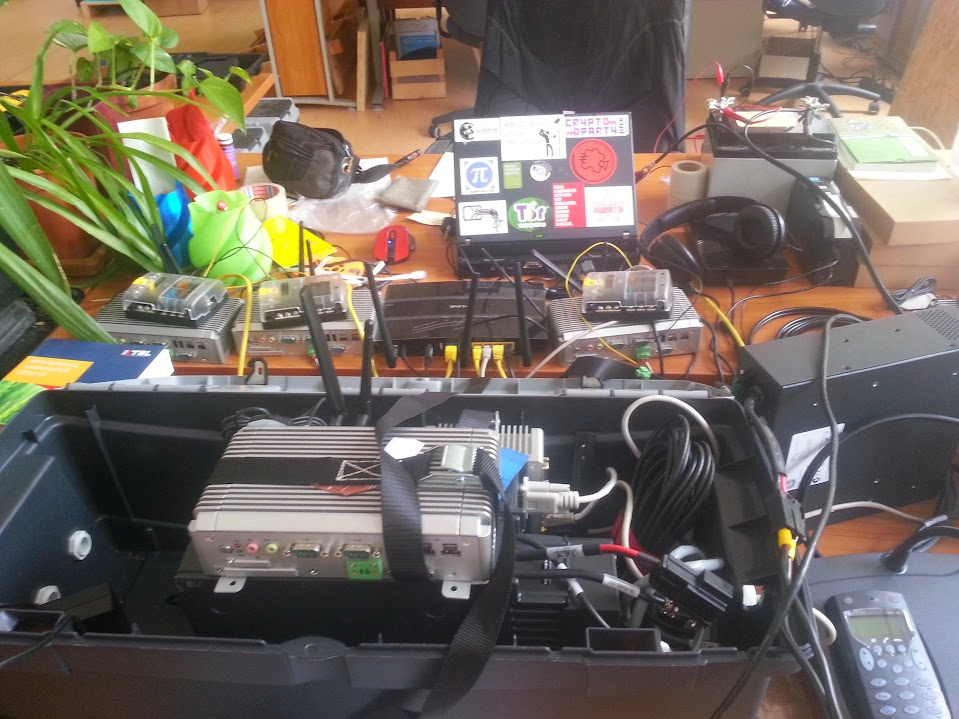
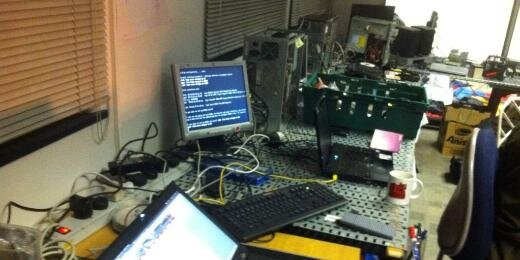
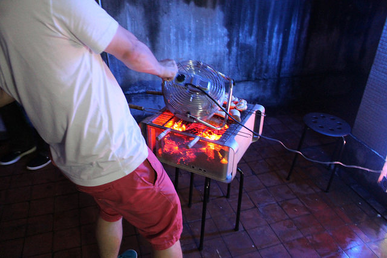

Security Engineering
In the age where most devices have an IP address, Security Engineering in Hardware Design and Product Development is more critical than ever. It is important therefore to ensure robustness from the ground up.
In today's interconnected world, safeguarding hardware design and product development is crucial to maintaining integrity across all aspects of your business. With our expertise in security engineering, we help you create secure products that protect sensitive information while adhering to industry standards.
Services Offered as a Security Engineer
Secure Hardware Design: collaborate with your team to develop robust hardware designs that incorporate built-in security features such as encryption modules, tamper detection mechanisms, and secure boot processes – effectively mitigating potential threats at the hardware level.
Supply Chain Protection: evaluate your supply chain for vulnerabilities and implement risk mitigation strategies; ensuring components remain untampered throughout the manufacturing process while minimizing exposure to counterfeit or compromised parts.
Firmware Security: review firmware code for potential vulnerabilities using static analysis tools; identify weaknesses within embedded software that could be exploited by malicious actors seeking unauthorized access or control over devices.
Compliance with Industry Standards: ensure all aspects of product design align with relevant industry standards (e.g., FIPS 140-2, ISO/IEC 15408) for enhanced credibility and customer trust; maintain compliance through regular audits or certifications where necessary.
End-to-end Encryption & Secure Communication Protocols: implement strong end-to-end encryption methods on data transmitted between devices preventing eavesdropping or interception further bolstering privacy protection during data transfers interactions within connected ecosystems.
Regular Hardware Security Audits & Updates: conduct periodic security audits on implemented solutions monitoring any emerging threats adjusting defense mechanisms accordingly provide ongoing support to ensure sustained levels of resilience against evolving cyber attacks and enhancing firmware by providing updates and patches to mitigate newly discovered vulnerabilities in order to maximize longevity of deployed systems.
Supply Chain Protection: evaluate your supply chain for vulnerabilities and implement risk mitigation strategies; ensuring components remain untampered throughout the manufacturing process while minimizing exposure to counterfeit or compromised parts.
Firmware Security: review firmware code for potential vulnerabilities using static analysis tools; identify weaknesses within embedded software that could be exploited by malicious actors seeking unauthorized access or control over devices.
Compliance with Industry Standards: ensure all aspects of product design align with relevant industry standards (e.g., FIPS 140-2, ISO/IEC 15408) for enhanced credibility and customer trust; maintain compliance through regular audits or certifications where necessary.
End-to-end Encryption & Secure Communication Protocols: implement strong end-to-end encryption methods on data transmitted between devices preventing eavesdropping or interception further bolstering privacy protection during data transfers interactions within connected ecosystems.
Regular Hardware Security Audits & Updates: conduct periodic security audits on implemented solutions monitoring any emerging threats adjusting defense mechanisms accordingly provide ongoing support to ensure sustained levels of resilience against evolving cyber attacks and enhancing firmware by providing updates and patches to mitigate newly discovered vulnerabilities in order to maximize longevity of deployed systems.
Security Engineering / Cybersecurity Consultant
Having secure hardware and systems is only a part of the puzzle, those systems also exist and are used in the world, by real people and on the public internet. Together we can create personalized security strategies, reliable network or hardware designs or custom-made employee training programs that reinforce your business against cyberattacks. Don't leave the safety of your digital domain to chance – let's collaborate, tell me about the needs of your organisation and I will provide exceptional service to bring you peace of mind and guide you towards a secure future!
Background
With a strong background in technology and engineering and over 13 years of experience actively participating in the hacker scene, from grassroots and the underground to industry including involvement with groundbreaking movements such as the Cryptoparty Movement and the Chaos Computer Club (CCC), I am well-equipped to offer my expertise as a Cybersecurity Expert/Consultant. My primary goal is to utilize my extensive knowledge of security to help orginisations engaged in social change and ethical businesses to protect their digital assets from cyber threats effectively.
The Cryptoparty Movement has been empowering individuals around the world by teaching them how to use encryption tools and techniques that enhance privacy protection. As an active participant in this movement, I have witnessed firsthand its tremendous impact on raising awareness about data privacy and fostering a culture where people prioritize their online safety.
Chaos Computer Club (CCC) As one of Europe's largest hacker organizations, CCC has played a crucial role in advocating for transparency, freedom of information, and personal privacy through various initiatives including conferences, workshops, publications and projects that address relevant issues within society. My experience with CCC has provided me with valuable insights into critical aspects of cybersecurity while exposing me to state-of-the-art methods employed by ethical hackers worldwide.
Chaos Computer Club (CCC) As one of Europe's largest hacker organizations, CCC has played a crucial role in advocating for transparency, freedom of information, and personal privacy through various initiatives including conferences, workshops, publications and projects that address relevant issues within society. My experience with CCC has provided me with valuable insights into critical aspects of cybersecurity while exposing me to state-of-the-art methods employed by ethical hackers worldwide.
Services Offered as a Cybersecurity Expert/Consultant
Secure Network Design: robust network architecture tailored specifically for your business needs; utilizing best practices such as DMZs, VPNs, firewalls configuration optimization while adhering to industry standards ensuring maximum protection against cyber threats.
Penetration Testing Perform rigorous penetration testing simulating real-world hacking scenarios uncovering potential attack vectors before malicious actors exploit them effectively safeguarding your organization from costly data breaches or downtime incidents.
Employee Training & Awareness Programs: develop customized training programs aimed at educating employees about current cybersecurity risks, phishing schemes, social engineering tactics and so on thereby cultivating responsible behavior fostering a security-conscious culture within the workplace.
Incident Response Planning: preparing comprehensive incident response plans outlining procedures to follow in case of cybersecurity breaches, ensuring quick containment and minimal damage to your business operations.
Regulatory Compliance Assistance: provide guidance on staying compliant with industry-specific regulations such as GDPR, HIPAA, PCI-DSS; guaranteeing that your organization meets all legal requirements minimizing potential fines or penalties due to non-compliance.
With my background in Cryptoparty Movement, Chaos Computer Club (CCC), and extensive hands-on experience in cybersecurity, I am confident about assisting businesses in safeguarding their digital assets from ever-evolving cyber threats through strategic planning and effective implementation of robust security practices.
Image Gallery
<3 to LQDN. My favourite t-shirt

Full stack: Software. Hardware. Networking. Solar. Encrypted Data Sync over HF Radio. OTA Updates via UMTS / or LAN where available. Rugged. Ultra-remote deployment. Security principles applied throughout the design. Complex system design, integration, building and testing.
CCC Summer Camp

OccupyLSX NOC, Bank of Ideas

Hacker BBQ. Macs *are* useful after all!
 OccupyLSX Tech
OccupyLSX Tech
 OccupyLSX Tech, first days
OccupyLSX Tech, first days
 OccupyLSX Tech, some friends from the internet are here
OccupyLSX Tech, some friends from the internet are here
 OccupyLSX Tech, St Pauls
OccupyLSX Tech, St Pauls